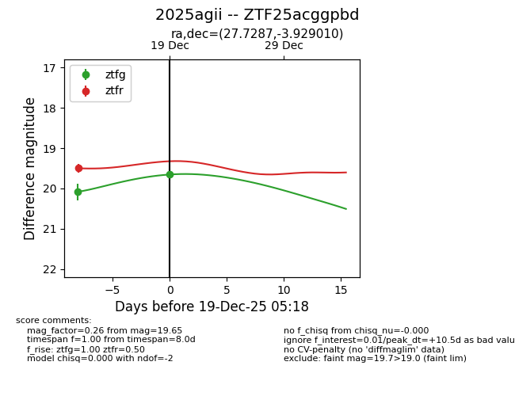
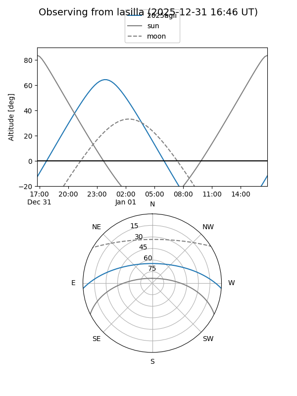
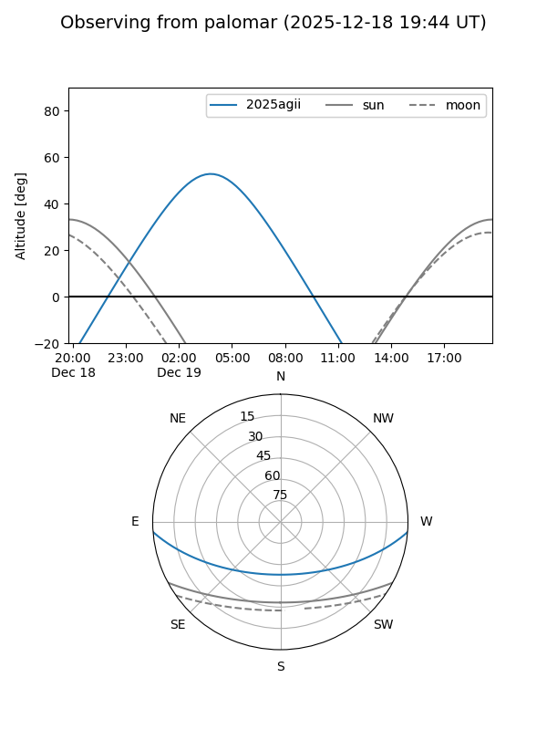
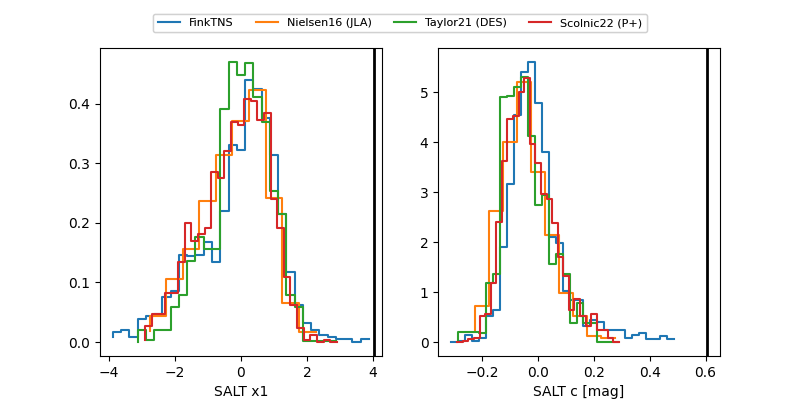

2025agii
Target 2025agii at 2026-01-16 06:10
Aliases and brokers:
FINK: link
Lasair: link
ALeRCE: link
TNS: link
YSE: link
alt names
ZTF25acggpbd (ztf,fink_ztf)
2025agii (tns,yse)
ATLAS25qdd (atlas)
PS25jwt (panstarrs)
Coordinates:
equatorial (ra, dec) = 27.7287,-3.92901
equatorial (HMS+DMS) = 01:50:54.89,-03:55:44.43
galactic (l, b) = (156.9918,-62.79902)
Flags:
Photometry:
last ztfg=16.88, ztfr=16.92
5 ztfg, 5 ztfr detections
Lightcurve

Visibility


Additional plots
